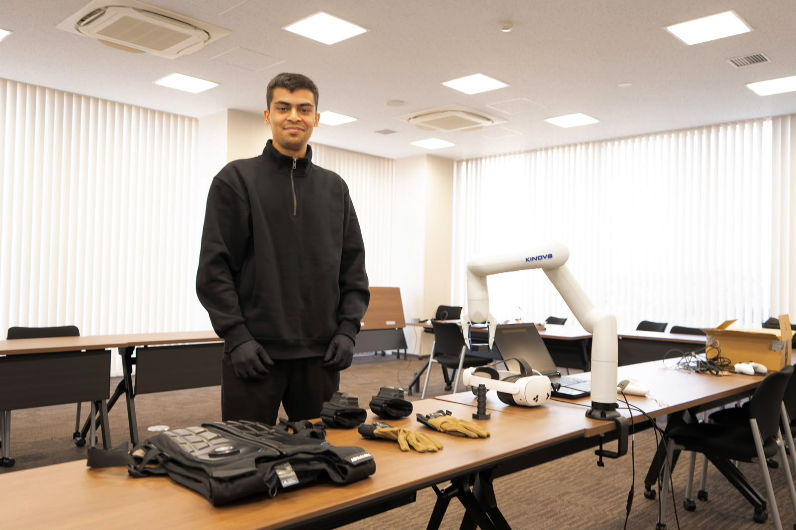

This website is still under construction — more is on the way.
Muhammad Abdullah Zahid
Undergraduate Researcher,
NISAR Laboratory
Kyoto University of Advanced Science
· Kyoto, Japan

I am an undergraduate researcher at the NISAR Laboratory, Kyoto University of Advanced Science, where I work with Dr. Sajid Nisar on haptics and mixed reality for robotic telemanipulation.
My research asks what the sense of touch contributes when someone controls a robot through a virtual or mixed-reality interface — not only to how well they perform on the day, but to how quickly they learn the skill at all. That means building the systems and then testing them properly: wearable vibrotactile and passive kinesthetic devices, spatially registered digital twins of robot manipulators, and controlled user studies that measure the rate of improvement rather than a single snapshot of performance.
Publications
Projects
Certifications
Contact
I am happy to hear about research collaborations, graduate study, or anything related to haptics and mixed reality. Email is the most reliable way to reach me.